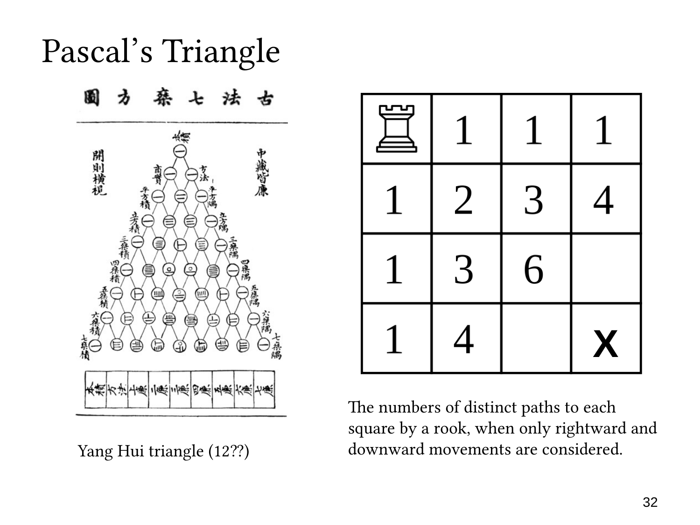

L1.7 · 第 32 页讲解原文
查看这一页课件

棋盘路径：中间的 6 从哪里来
这一页新增的三个数是 4,6,4，都对应总共走四步的格子。
第二行、第四列需要三次向右和一次向下。唯一的一次向下可以放在四个位置之一，所以有
(14)=4
条路径。递推上它等于左边的 3 加上上边的 1。
第三行、第三列需要两次向右和两次向下。四步中选择两步向下，得到
(24)=6.
图中的计算是上方 3 条与左方 3 条相加，即 3+3=6。
第四行、第二列是第一个位置的对称情况，需要三次向下和一次向右，所以同样有 4 条路径。
于是这一层的内部数字是 4,6,4，加上完整帕斯卡三角形两端的边界 1，就是
1, 4, 6, 4, 1.
棋盘只显示落在四行四列范围内的部分。沿斜向观察总步数相同的格子，能够看出 Pascal’s Triangle；沿上方和左方相加，则能够看出 Pascal’s identity。